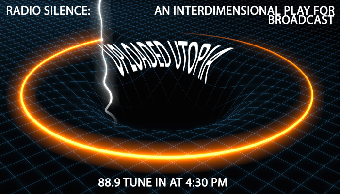

A radioplay broadcast (1) from home illegally and infrequently on 88.9 FM in providence, ri, and (2)
from the internet legally and regularly, at 4 PM at www.radiosilence.online. A radio astronomer tra-
cking a satellite falls in love with her charge but following the discovery of an anomaly in the space
time continuum, must make a choice between her machine lust and a revelation that could change the 3rd
dimension entirely.
Produced using sound information collected by NASA's probes found here:
www.soundcloud.com/nasa/sets/spookyspacesounds